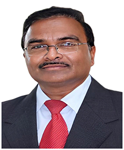

Management
Leadership
Er.Koneru Satyanarayana
Chancellor
Er.Koneru Lakshman Havish
Vice PresidentEr.Koneru Raja Hareen
Vice PresidentDr K.S.Jagannatha Rao
Pro ChancellorDr.G.Pardha Saradhi Varma
Vice Chancellor

read more